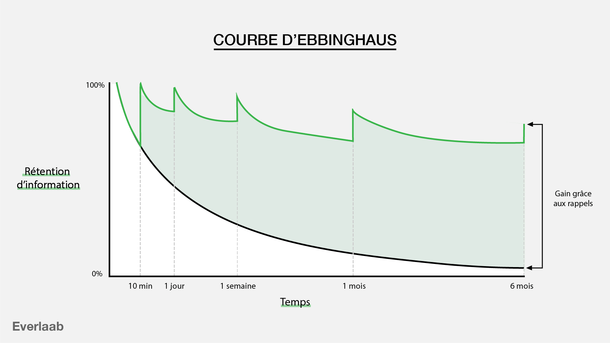
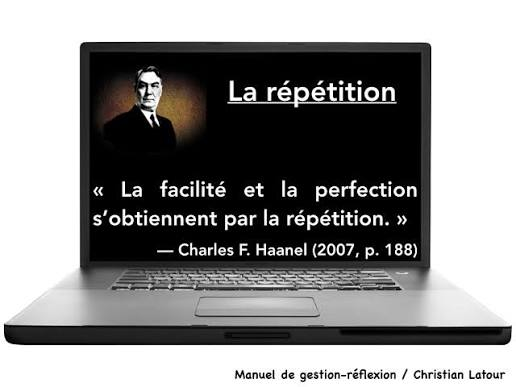

Organiser, apprendre, comprendre et réussir !
La répétition espacée est une technique d'apprentissage qui consiste à réviser une information à des intervalles de temps de plus en plus longs pour l'ancrer durablement dans la mémoire.


une méthode d'apprentissage qui consiste à forcer votre cerveau à extraire des informations de votre mémoire plutôt que de relire passivement vos cours.
Mettre une question d'un côté et la réponse de l'autre. Tester sa mémoire avant de retourner la carte.
Découvrir AnkiExpliquer un concept avec des mots simples, comme si vous l'enseigniez à un débutant.
Prendre une feuille blanche et écrire tout ce qui revient en mémoire après la lecture.
Les fiches permettent de résumer les notions essentielles et de visualiser rapidement les informations importantes.
Les QCM permettent de vérifier ses connaissances, d'identifier ses lacunes et de s'habituer au format des examens.